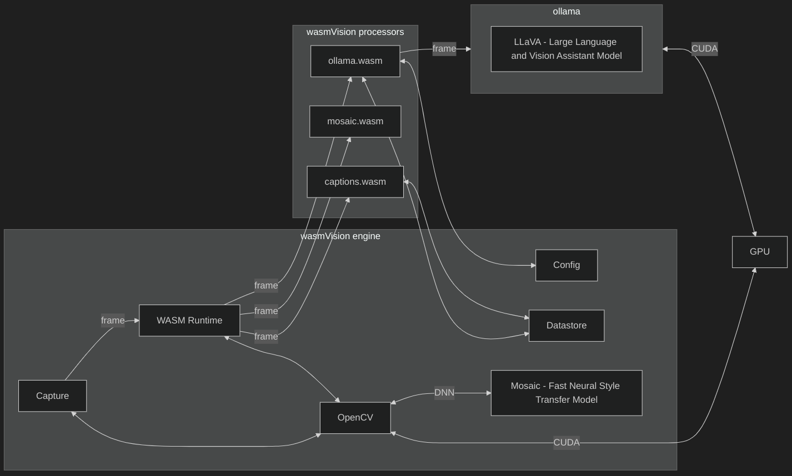

Seeing Eye To Eye:
Computer Vision Using WebAssembly
WASM I/O 2025
Ron Evans - @deadprogram
fed: @deadprogram@social.tinygo.org
bsky: @deadprogram.com
Ron Evans (@deadprogram)
Technologist For Hire
Technologist For Hire
hybridgroup.com
Software that makes
your hardware work
Open Source Projects
tinygo.org

GoCV.io
computer vision using WebAssembly?
Industrial computer vision systems
Embedded Linux devices
Edge computing devices
Cloud computing
Agriculture
Transportation
Energy
Security
Manufacturing
Retail
A lot of computer vision applications have similar basic structure
lots of different parts to integrate
hard to run on different kinds of machines
hard to update
some need for customization
wasmvision.com
Get going with computer vision using WebAssembly
Capture video
Process it
Save or stream it
'wasmvision' command line interface
wasmVision engine
wasmVision processors
engine Written in Go
OpenCV
FFmpeg
GStreamer
GoCV
Wazero
All combined into a Single, statically linked binary

wasmvision architecture
wasmvision Processors
Can be written using Go (TinyGo)
Rust
C
wasmCV
wasmcv.org
wasm interfaces for computer vision
defined Using wit (wasm interface type)
wit is part of the wasm component model
HOWEVER
wasmvision is not using the wasm component model
just using wit to generate client interface wrappers and documentation
wypes
github.com/orsinium-labs/wypes
How Computer Vision Works

Mat

RGB Mat

How OpenCV/GoCV Works
How wit Works
interfaces
basic types
record
resource
world.wit file
See the code
Everything is generated from the .wit files
wasmCV Docs
See the code
wasmVision processors - go
package wasmcv
wit-bindgen-go
go.bytecodealliance.org
tinygo build -o blur.wasm -target=wasm-unknown --no-debug ./blur
Blur processor (Go)
See the code
Run Blur processor (Go)
wasmVision processors - rust
crate wasmcv
wit-bindgen
github.com/bytecodealliance/wit-bindgen
cargo build --target wasm32-unknown-unknown --release
Blur processor (Rust)
See the code
Run Blur processor (Rust)
wasmVision processors - c
#include "wasmcv/imports.h"
wit-bindgen
github.com/bytecodealliance/wit-bindgen
/opt/wasi-sdk/bin/clang --target=wasm32-unknown-unknown -O3 \
--sysroot="${WASI_LIBC_SYSROOT}/lib/wasi-libc/sysroot" \
-z stack-size=4096 -Wl,--initial-memory=65536 \
-I$WASMCV_C_COMPONENTS_PATH -I$WASMVISION_C_COMPONENTS_PATH \
-o ../blurc.wasm process.c \
$WASMCV_C_COMPONENTS_PATH/wasmcv/imports.c $WASMCV_C_COMPONENTS_PATH/wasmcv/imports_component_type.o \
$WASMVISION_C_COMPONENTS_PATH/wasmvision/platform.c $WASMVISION_C_COMPONENTS_PATH/wasmvision/platform_component_type.o \
-Wl,--export=process \
-Wl,--export=__data_end -Wl,--export=__heap_base \
-Wl,--strip-all,--no-entry \
-Wl,--unresolved-symbols=ignore-all \
-nostdlib \
Blur processor (C)
See the code
Run Blur processor (C)
Processors
Provide basic building blocks
Can be chained together
Can create your own processors
A quick tour of a few included processors
asciify processor (Go)
See the code
Run asciify processor
wasmVision platform
logging
configuration
http
datastore
Creative Captioning
Live caption generation
with an artistic flair

Creative Captioning architecture
config.toml
See the config
ollama processor (Go)
See the code
mosaic processor (Go)
See the code
captions processor (Go)
See the code
Run captioning
Videodrone
Flight control station with face tracking
using machine learning model
DJI Tello drone
Dualshock 4 joystick
Look at the hardware
Gobot
YuNet Face Detection Model

How Computer Vision Models Work